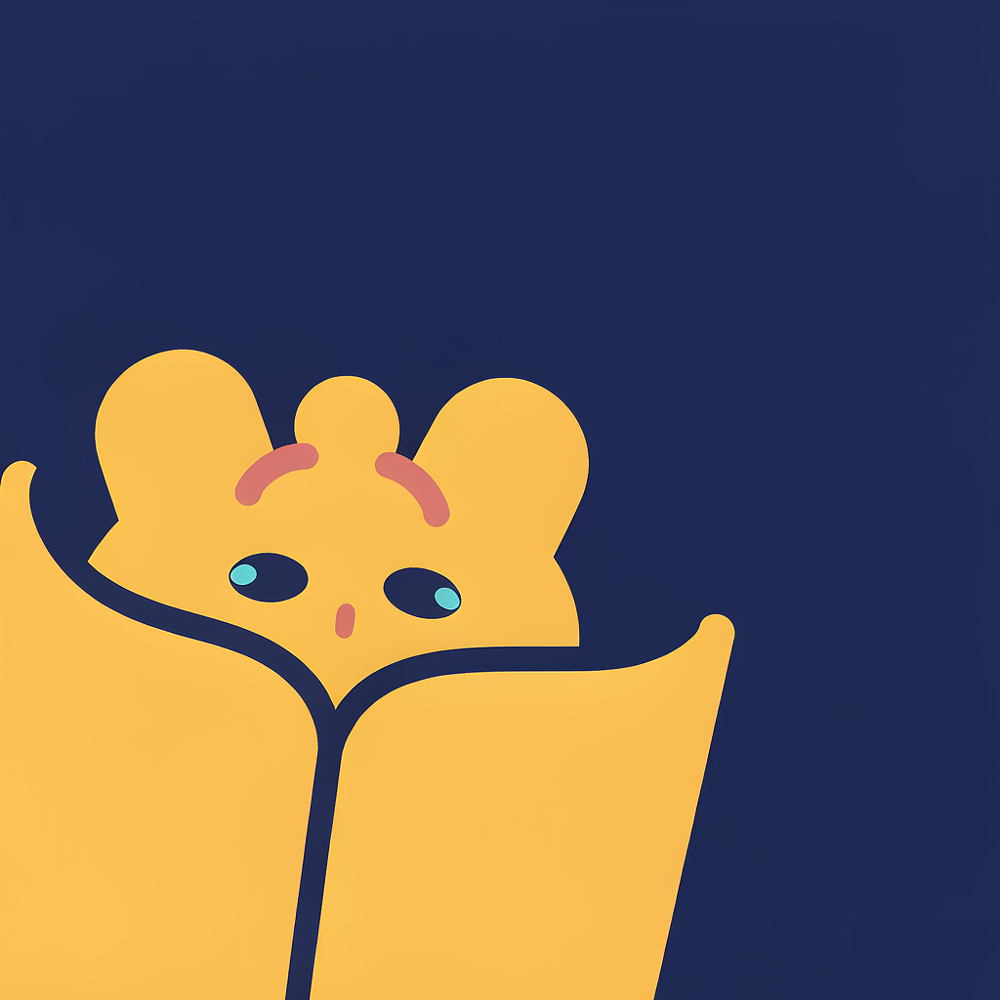

| 网站顶栏 / 内页装饰 / 加载动画 | ✔ 完美 SVG 无限缩放，动画照常播放，几 KB 大小 |
| README / GitHub 页 | ✔ 可以 用 <img src> 引用 SVG，GitHub 会原样渲染（动画保留） |
| favicon（浏览器标签页） | ✘ 不动 标签页图标只渲染静态帧 —— 用静态版 |
| PWA 安装图标 / 手机主屏 / 应用商店 | ✘ 不动 manifest 图标一律按静态处理 —— 用静态版 |
所以推荐组合：静态版当正 logo（favicon / PWA / 社交头像），动画版当开场彩蛋（打开图谱页时播一次，或放在「关于」弹窗里循环）。动起来的是同一个角色，识别度不打折。
assets/logo-candidates/C1-clean.png（1024×1024 去水印）·
assets/logo-animated.svg（动画版，约 3KB）·
动效：入场升起 0.9s → 呼吸浮动 5.6s 循环 → 每 4.6s 眨眼；系统开启「减少动态效果」时自动静止。